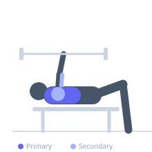

Exercise guide / Landmine Single-Arm Chest Press
Landmine Single-Arm Chest Press
The landmine single-arm chest press uses one end of a barbell anchored to the floor to create an arcing pressing motion that is gentler on the shoulder joint than a traditional horizontal press. The angled load path recruits the upper and mid pectorals while also engaging the core and serratus anterior for stability.
Primary muscles
pectoralis major clavicular
pectoralis major sternal
Secondary muscles
deltoid anterior
triceps lateral head
Stabilizers
transverse abdominis
external oblique
Equipment
Standard Barbell


Starting position
- Anchor one end of a barbell in a landmine attachment or a corner. Stand facing the barbell, holding the free end at shoulder height with one hand, feet shoulder-width apart.
Setup
- Secure the barbell in the landmine sleeve. Load weight onto the free end only. Grip the end of the bar and position it at chest height with the elbow pointing down and back.
Steps
- Step 1: Hold the barbell end at upper chest height, elbow below the bar.
- Step 2: Brace the core and press the bar forward and slightly upward, extending the arm fully.
- Step 3: Hold briefly at the top, then bend the elbow and return the bar in a controlled arc back to the start.
- Step 4: Keep the torso stable and avoid rotating to assist the press.
- Step 5: Complete all reps on one side before switching.
Coaching cues
- Push the bar in an arc, not straight out
- Brace like you're taking a punch
- Feel the upper chest engage on each press
Breathing
- Exhale as you press the barbell forward. Inhale as you lower it back toward the chest.
Range of motion
- Press until the arm is fully extended and the bar is at face height or above. Return until the hand is at chest level.
Tempo
- 2-0-2-0
Common mistakes
- Rotating the torso aggressively to get the bar up
- Gripping the bar too far from the end, reducing leverage
- Letting the elbow flare excessively to the side
Safety
- Ensure the barbell anchor is secure before pressing
- Start with no added weight to learn the arc of motion
- Keep the wrist neutral throughout the press
Training
- strength: 5–8 reps
- hypertrophy: 8–12 reps
- strength: 3–5 sets
- hypertrophy: 3–4 sets
- Rest: {'strength': 180, 'hypertrophy': 90}